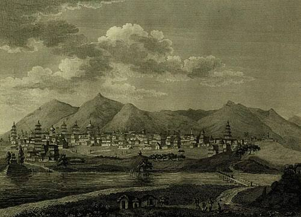
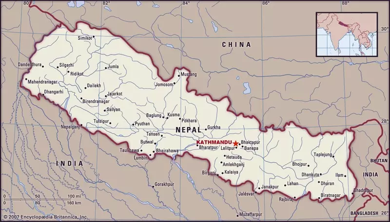

HISTORY |
Kathmandu has an extensive history spanning back since around 167 BCE. According to local myth, the Kathmandu Valley was once a massive lake named Nagdaha, and the lake was drained by a demi-god cutting through it with a large sword. Since then it has gone through many different kingdoms and dynasties and yet the town still stands today. Marketplaces that were built according to Tantric traditions still stand as well as the many beautiful temples such as Bhaktapur, which is covered in tiny details, realistic sculptures and 55 windows have lasted longer than certain countries. |
|
 |
 |